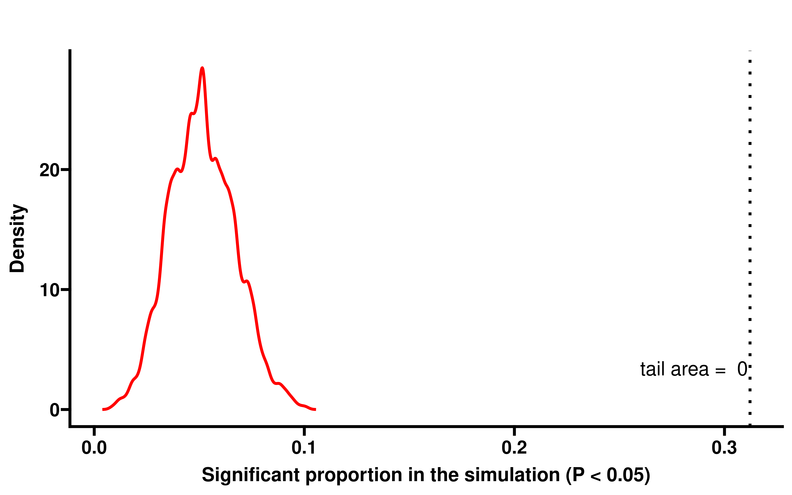
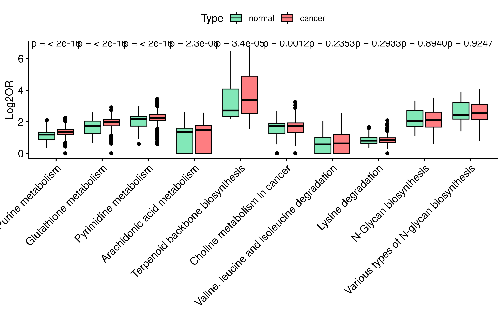

Precise metabolic dependencies of cancer through deep learning and validations
Dependencies
library(yardstick)
library(dplyr)
library(ggplot2)
library(ggprism)
library(patchwork)
library(ggpubr)
library(parallel)The DeepMeta framework
The metabolic vulnerability of each specific sample is dependent on
the sample status and the metabolic network context. Here, we present
the DeepMeta framework to predict the metabolic gene dependence based on
the metabolic pathway information characterized by enzyme networks and
sample status information defined by gene expression profile. Thus,
DeepMeta has two inputs, the sample-specific enzyme network and the gene
expression information (Fig 1a).

We used the graph attention network (GAT) module to extract
information from the sample-specific enzyme network to obtain the
embedding of the metabolic enzyme gene node, and used the fully
connected neuron network module to extract information from the
expression profiles of cells to get the sample state embedding (see
Methods). Here, the features of gene node in metabolic enzyme network
was implemented by binary vector which denotes the involvement of the
gene in chemical and genetic perturbation (CPG) gene sets5. These two
parts of information are then merged to predict metabolic dependencies
for each specific samples (Fig 1a). DeepMeta was trained on
cell line CRISPR-Cas9 screening data of DepMap6 (23Q2 version). We used
the post-Chronos7 gene dependency probability score to set up a
classification problem for our model. The dependency probabilities value
is between 0 and 1. Sample-gene pair with dependency score >0.5 were
defined as the positive class and the sample-gene pair with dependency
score <=0.5 were defined as the negative class. We choose cancer cell
lines with matched cancer type or tissue-specific Genome-Scale Metabolic
Models (GSMs) and genes existing in corresponding enzyme network and
positive in at least 3 cell lines. In together, 343,029 (760 cell lines
and 1063 genes) labeled samples were available. We randomly partitioned
cell lines into training (90%) and testing (10%) sets, and in the
training set, we randomly sampled 70% of data for training, 30% to
monitor training process and tune hyper-parameters.
To access the impact of different parts on the performance of the model, we conducted ablation experiments, and train new models using random metabolic node features, without the enzyme network or random sample expression as input, then compared the performance of these model with DeepMeta using ten-folds cross validation. First, we calculated metrics in every CV fold:
get_roc <- function(dt,need="all"){
dt <- dt %>%
mutate(truth = ifelse(label == 1, "Class1","Class2"),
pred_label = ifelse(preds == 1, "Class1","Class2"))
dt$truth <- factor(dt$truth)
dt$pred_label <- factor(dt$pred_label)
f1 <- try(f_meas(dt,truth,pred_label)[".estimate"] %>%
unlist() %>% unname() %>% round(.,2),silent = TRUE)
kappa <- try(kap(dt,truth,pred_label)[".estimate"] %>%
unlist() %>% unname() %>% round(.,2),silent = TRUE)
f1 <- ifelse('try-error' %in% class(f1),NA,f1)
kappa <- ifelse('try-error' %in% class(kappa),NA,kappa)
if (need == "all"){
roc <- roc_auc(dt, truth, preds_raw)[".estimate"] %>%
unlist() %>% unname() %>% round(.,2)
pr <- pr_auc(dt, truth, preds_raw)[".estimate"] %>%
unlist() %>% unname() %>% round(.,2)
return(c(roc,pr,f1,kappa))
}else{
res <- switch(
need,
"roc" = roc_auc(dt, truth, preds_raw)[".estimate"] %>%
unlist() %>% unname() %>% round(.,2),
"pr" = pr_auc(dt, truth, preds_raw)[".estimate"] %>%
unlist() %>% unname() %>% round(.,2),
"f1" = f1,
"kappa" = kappa
)
return(res)
}
}
get_gene_metric <- function(dt,gene_name,need){
dt <- dt %>%
mutate(truth = ifelse(label == 1, "Class1","Class2"),
pred_label = ifelse(preds == 1, "Class1","Class2")) %>%
filter(genes == gene_name)
dt$truth <- factor(dt$truth)
dt$pred_label <- factor(dt$pred_label)
f1 <- try(f_meas(dt,truth,pred_label)[".estimate"] %>%
unlist() %>% unname() %>% round(.,2),silent = TRUE)
kappa <- try(kap(dt,truth,pred_label)[".estimate"] %>%
unlist() %>% unname() %>% round(.,2),silent = TRUE)
f1 <- ifelse('try-error' %in% class(f1),NA,f1)
kappa <- ifelse('try-error' %in% class(kappa),NA,kappa)
res <- switch(
need,
"roc" = roc_auc(dt, truth, preds_raw)[".estimate"] %>%
unlist() %>% unname() %>% round(.,2),
"pr" = pr_auc(dt, truth, preds_raw)[".estimate"] %>%
unlist() %>% unname() %>% round(.,2),
"f1" = f1,
"kappa" = kappa
)
return(res)
}
test_dtV2 <- readRDS("~/DeepMeta/data/test_dtV2.rds")
train_dtV2 <- readRDS("~/DeepMeta/data/train_dtV2.rds")
all_dt <- bind_rows(test_dtV2,train_dtV2)
all_dt_summ <- all_dt %>%
group_by(gene) %>%
summarise(pos_counts = mean(is_dep == 1)) %>%
ungroup() %>%
filter(pos_counts < 0.9 & pos_counts > 0.1)
all_dt_summ <- left_join(
all_dt_summ,
all_dt %>% select(id,gene) %>% distinct_all()
)
all_cv <- c("own_model","random_feat","random_exp",
"no_gnn","gnn_model_random_y",
"ml_logistic","ml_rf","ml_svm")
cv_res <- vector("list",8)
for (i in 1:8){
sub_res <- vector("list",10)
for (j in 1:10){
pre <- read.csv(paste0("~/DeepMeta/data/cv/",
all_cv[i],"/fold_",j-1,".csv")) %>% select(-X)
pre_roc <- ifelse(i %in% c(1:7),get_roc(pre,need = "roc"),NA)
pre_pr <- ifelse(i %in% c(1:7),get_roc(pre,need = "pr"),NA)
pre_f1 <- get_roc(pre,need = "f1")
pre_kap <- get_roc(pre,need = "kappa")
dt <- pre %>%
filter(genes %in% all_dt_summ$id) %>%
group_by(genes) %>%
summarise(pos_counts = sum(label == 1),
neg_counts = sum(label == 0)) %>%
ungroup() %>% filter(pos_counts>0 & neg_counts > 0)
pre_gene_roc <- data.frame(gene = unique(dt$genes)) %>%
rowwise() %>%
mutate(roc = ifelse(i == 8,NA,
get_gene_metric(pre,gene_name = gene,"roc"))) %>%
ungroup()
sub_res[[j]] <- data.frame(
fold = paste0("Fold-",j),
ROC = pre_roc,
PR = pre_pr,
F1 = pre_f1,
Kappa = pre_kap,
per_roc = mean(pre_gene_roc$roc,na.rm=T)
)
}
sub_res <- bind_rows(sub_res)
sub_res$type <- all_cv[i]
cv_res[[i]] <- sub_res
}
cv_res <- bind_rows(cv_res)
cv_res <- cv_res %>%
tidyr::pivot_longer(cols = c("ROC","PR","F1","Kappa","per_roc"),
names_to = "Metric",values_to = "Value")
cv_res <- na.omit(cv_res)
saveRDS(cv_res,file = "data/cv_res.rds")Plot results for ablation experiments (Fig1b):
cv_res <- readRDS("~/DeepMeta/data/cv_res.rds")
cv_res <- cv_res %>%
filter(Metric != "per_f1") %>%
mutate(Metric = ifelse(Metric == "per_roc","Per-ROC",Metric))
cv_1 <- cv_res %>%
filter(!(type %in% c("ml_logistic","ml_rf","ml_svm")))
ggbarplot(cv_1, x = "type", y = "Value",fill="Metric",
add = "mean_se", label = TRUE,
lab.vjust = -0.5,position = position_dodge(0.9),
order = c("own_model","random_feat","random_exp","no_gnn",
"gnn_model_random_y"),
palette = c("#2B4F7D","#3B77B0","#7BC5E3","#EEDC96","#637951"),
lab.nb.digits = 2, xlab=F)+
scale_x_discrete(labels=c("DeepMeta","Random Feature",
"Random Expression",
"Without GNN","Scrambled label"))+
labs(x="Type",y='Value')We also performed scrambling label experiment as negative control to verify that the achieved performance was not by chance. Besides, our model achieved an average ten-fold per-ROC (ROC of individual gene) of 0.61, much higher than expected by random chance using the scrambled-label method (average per-ROC of 0.49).
res <- vector("list",10)
for (j in 1:10){
pre <- read.csv(paste0("~/DeepMeta/data/cv/own_model",
"/fold_",j-1,".csv")) %>% select(-X)
dt <- pre %>%
filter(genes %in% all_dt_summ$id) %>%
group_by(genes) %>%
summarise(pos_counts = sum(label == 1),neg_counts = sum(label == 0)) %>%
ungroup() %>% filter(pos_counts>0 & neg_counts > 0)
pre_gene_roc <- data.frame(gene = unique(dt$genes)) %>%
rowwise() %>%
mutate(roc = get_gene_metric(pre,gene_name = gene,"roc")) %>%
ungroup()
pre_gene_roc$fold <- j
pre_gene_roc <- left_join(
pre_gene_roc %>% rename(id = gene),
all_dt_summ
)
res[[j]] <- pre_gene_roc
}
res <- bind_rows(res)
res_gene_summ <- res %>%
group_by(gene) %>%
summarise(ave_per_roc = mean(roc)) %>%
ungroup()
saveRDS(res_gene_summ,file = "data/per_roc.rds")Among these genes, the proportion of genes with an ROC exceeding 0.5
is about 85% (Extended Data Fig. 1), indicating that our
model has good predictive performance for most genes:
res_gene_summ <- readRDS("~/DeepMeta/data/per_roc.rds")
res_gene_summ$tt <- ""
ggboxplot(res_gene_summ,x="tt",y="ave_per_roc",xlab = FALSE,
ylab = "Average ROC")We compared the model performance with three machine learning (ML)
models (see Methods). Since the machine learning model cannot handle
high-dimensional input features (3247 metabolic node features plus
7993-dimensional sample gene expression features), these ML models used
dimension-reduced inputs obtained by principal component analysis (PCA)
and were trained and validated in ten-fold cross-validation
(Fig1c):
cv_res <- readRDS("~/DeepMeta/data/cv_res.rds")
cv_res <- cv_res %>%
filter(Metric != "per_f1") %>%
mutate(Metric = ifelse(Metric == "per_roc","Per-ROC",Metric))
cv_2 <- cv_res %>%
filter(type %in% c("own_model","ml_logistic","ml_rf","ml_svm"))
ggbarplot(cv_2, x = "type", y = "Value",fill="Metric",
add = "mean_se", label = TRUE,
lab.vjust = -0.5,position = position_dodge(0.9),
order = c("own_model","ml_logistic","ml_rf","ml_svm"),
palette = c("#2B4F7D","#3B77B0","#7BC5E3","#EEDC96","#637951"),
lab.nb.digits = 2, xlab=F)+
scale_x_discrete(labels=c("DeepMeta","Logistic","RF","SVM"))+
labs(x="Type",y='Value')Model performance evaluation
enz_gene_mapping <- readRDS("~/DeepMeta/data/enz_gene_mapping.rds")
cpg_gene <- readRDS("~/DeepMeta/data/cpg_gene.rds")
ensg2name <- function(ensg,mapping){
tt <- strsplit(ensg," and ")[[1]]
tt_gene <- mapping$symbol[which(mapping$ensembl_id %in% tt)] %>%
unique()
sym <- tt_gene %>%
paste(.,collapse=",")
return(sym)
}In the test dataset (76 cell lines and 1010 genes), DeepMeta achieved
the ROC of 0.94 (Fig2a), illustrating our model enables
accurate prediction of metabolic dependencies:
pre <- read.csv("~/DeepMeta/data/test_preV2.csv") %>% select(-X)
pre <- pre %>%
mutate(truth = ifelse(label == 1, "Class1","Class2"),
pred_label = ifelse(preds == 1, "Class1","Class2"))
pre$truth <- factor(pre$truth)
pre$pred_label <- factor(pre$pred_label)
pr <- pr_auc(pre, truth, preds_raw)[".estimate"] %>%
unlist() %>% unname() %>% round(.,2)
roc <- roc_auc(pre, truth, preds_raw)[".estimate"] %>%
unlist() %>% unname() %>% round(.,2)
p1 <- roc_curve(pre, truth, preds_raw) %>%
ggplot(aes(x = 1 - specificity, y = sensitivity)) +
geom_path() +
coord_fixed(xlim = 0:1, ylim = 0:1) +
theme_bw() +
annotate(geom="text", x=0.75, y=0.7, label=paste0("ROC-AUC: ",roc),
size=5)
p1We further validated DeepMeta performance using four independent datasets: - 1) Another CRISPR screen data conducted by the Sanger institute using a different CRISPR library8, containing 200 cell lines overlapped with training data and 25 unique cell lines; - 2) RNAi screen data9, which apply DEMETER2 to the combination of three large-scale RNAi screening datasets: the Broad institute project Achilles, Novartis project DRIVE, and the Marcotte et al. breast cell line dataset. This dataset contain 417 overlapped cell lines and 160 unique cell lines; - 3) The Childhood Cancer Model Atlas10 (CCMA) dataset which performs CRISPR-Cas9 screen in 110 paediatric solid tumour cell lines and reports Z scores; - 4) Pemovska et.al11 drug screen dataset, which performs metabolic drug library (contains 243 compounds) screen in 15 cancer cell lines (14 cells with gene expression data) and reports AUC scores, larger AUC score indicates stronger killing effect on cell.
DeepMeta achieved high AUROC scores in Sanger and RNAi dataset, both
for overlapped and unique cells (Fig2b and
Fig2c):
sanger <- data.table::fread("/home/data/sdc/wt/model_data/sanger_gene_dependency_chronos.csv",data.table = F)
colnames(sanger)[2:ncol(sanger)] <- gsub("\\s*\\([^\\)]+\\)","",
colnames(sanger)[2:ncol(sanger)])
sanger <- sanger %>%
tidyr::pivot_longer(cols = colnames(sanger)[2:ncol(sanger)],names_to = "gene",
values_to = "score")
colnames(sanger)[1] <- "cell"
sanger <- sanger %>%
filter(!is.na(score)) %>%
mutate(type = case_when(
score>0.5 ~ 1,
score<=0.5 ~ 0
))
pre <- read.csv("~/DeepMeta/data/sanger_preV2.csv") %>% select(-X)
pre_gene <- data.frame(id = unique(c(pre$gene_name))) %>%
rowwise() %>%
mutate(gene=ensg2name(id,enz_gene_mapping)) %>% ungroup()
pre <- pre %>%
left_join(.,pre_gene %>% rename(gene_name=id)) %>%
tidyr::separate_longer_delim(cols = gene,delim = ",") %>%
left_join(.,sanger) %>% filter(!is.na(type)) %>%
group_by(cell,gene_name) %>%
summarise(preds = unique(preds),
preds_raw = unique(preds_raw),
label = max(type,na.rm = T)) %>%
ungroup()
saveRDS(pre,file = "~/DeepMeta/data/sanger_pre.rds")The results of Sanger dataset:
pre <- readRDS("~/DeepMeta/data/sanger_pre.rds")
pre <- pre %>%
mutate(truth = ifelse(label == 1, "Class1","Class2"),
pred_label = ifelse(preds == 1, "Class1","Class2"))
pre$truth <- factor(pre$truth)
pre$pred_label <- factor(pre$pred_label)
train_dt <- read.csv("/home/data/sdc/wt/model_data/new_model/cell_net_filter_exp/raw/train_cell_info.csv")
common_cell <- pre %>% filter(cell %in% train_dt$cell)
unique_cell <- pre %>% filter(!(cell %in% train_dt$cell))
roc_comm <- roc_auc(common_cell, truth, preds_raw)[".estimate"] %>%
unlist() %>% unname() %>% round(.,2)
roc_unique <- roc_auc(unique_cell, truth, preds_raw)[".estimate"] %>%
unlist() %>% unname() %>% round(.,2)
p4 <- roc_curve(common_cell, truth, preds_raw) %>%
ggplot(aes(x = 1 - specificity, y = sensitivity)) +
geom_path() +
coord_fixed(xlim = 0:1, ylim = 0:1)+
theme_bw()+
annotate(geom="text", x=0.5, y=0.7, label=paste0("Seen Cells ROC-AUC: ",roc_comm),
size=4)
p5 <- roc_curve(unique_cell, truth, preds_raw) %>%
ggplot(aes(x = 1 - specificity, y = sensitivity)) +
geom_path() +
coord_fixed(xlim = 0:1, ylim = 0:1)+
theme_bw()+
annotate(geom="text", x=0.5, y=0.7, label=paste0("Unseen Cell ROC-AUC: ",roc_unique),
size=4)
p4+p5The results of RNAi dataset:
pre <- read.csv("~/DeepMeta/data/rnai_preV2.csv") %>% select(-X)
train_dt <- readRDS("~/DeepMeta/data/train_dtV2.rds")
pre <- pre %>%
mutate(truth = ifelse(label == 1, "Class1","Class2"))
pre$truth <- factor(pre$truth)
seen <- pre %>% filter(cell %in% train_dt$cell)
unseen <- pre %>% filter(!(cell %in% train_dt$cell))
seen_roc <- roc_auc(seen, truth, preds_raw)[".estimate"] %>%
unlist() %>% unname() %>% round(.,2)
unseen_roc <- roc_auc(unseen, truth, preds_raw)[".estimate"] %>%
unlist() %>% unname() %>% round(.,2)
p2 <- roc_curve(seen, truth, preds_raw) %>%
ggplot(aes(x = 1 - specificity, y = sensitivity)) +
geom_path() +
coord_fixed(xlim = 0:1, ylim = 0:1)+
theme_bw()+
annotate(geom="text", x=0.5, y=0.7, label=paste0("Seen Cells ROC-AUC: ",seen_roc),
size=4)
p3 <- roc_curve(unseen, truth, preds_raw) %>%
ggplot(aes(x = 1 - specificity, y = sensitivity)) +
geom_path() +
coord_fixed(xlim = 0:1, ylim = 0:1)+
theme_bw()+
annotate(geom="text", x=0.5, y=0.7, label=paste0("Unseen Cells ROC-AUC: ",
unseen_roc),
size=4)
p2+p3CCMA dataset uses Z score to quantify gene dependency, consistent
with the original paper, we classified cell-gene pair with Z score less
than -1.5 as positive class and others as negative class. Although the
model only achieved a moderate AUROC score in this dataset, there is a
significant difference in the Z scores between different predicted
classes (Fig2d):
ccma_dep <- data.table::fread("/home/data/sdc/wt/model_data/CCMA_CRISPRdependencyscore.csv", data.table = F)
pre <- read.csv("~/DeepMeta/data/ccma_preV2.csv") %>% select(-X)
pre_gene <- data.frame(id = unique(c(pre$gene_name))) %>%
rowwise() %>%
mutate(gene=ensg2name(id,enz_gene_mapping)) %>%
ungroup()
pre <- pre %>%
left_join(.,pre_gene %>% rename(gene_name=id)) %>%
tidyr::separate_longer_delim(cols = gene,delim = ",") %>%
left_join(.,
ccma_dep %>% select(sample,gene,z) %>%
rename(cell=sample)) %>%
filter(!is.na(z)) %>%
group_by(cell,gene_name) %>%
summarise(preds = unique(preds),
preds_raw = unique(preds_raw),
z_score = min(z,na.rm = T)) %>%
ungroup() %>%
mutate(label = ifelse(z_score < (-1.5),1,0))
saveRDS(pre,file = "~/DeepMeta/data/ccma_pre.rds")pre <- readRDS("~/DeepMeta/data/ccma_pre.rds")
pre <- pre %>%
mutate(truth = ifelse(label == 1, "Class1","Class2"),
pred_label = ifelse(preds == 1, "Class1","Class2"))
pre$truth <- factor(pre$truth)
pre$pred_label <- factor(pre$pred_label)
roc <- roc_auc(pre, truth, preds_raw)[".estimate"] %>%
unlist() %>% unname() %>% round(.,2)
p6 <- roc_curve(pre, truth, preds_raw) %>%
ggplot(aes(x = 1 - specificity, y = sensitivity)) +
geom_path() +
coord_fixed(xlim = 0:1, ylim = 0:1)+
theme_bw()+
annotate(geom="text", x=0.4, y=0.85, label=paste0("ROC-AUC: ",roc),
size=5)
p7 <- ggboxplot(data=pre,x="preds",y="z_score")+
stat_compare_means()+
labs(x="Model Prediction",y="Dependency Z scores")+
geom_hline(yintercept = (-1.5),color="red",linewidth=2,linetype=2)
p6+p7For each cell-gene pair in Pemovska dataset, we first obtain the
maximum AUC value of all drugs targeting a specific gene, then rank the
genes in each cell based on this AUC value and assign ranks. We showed
the overlap of the top 5 genes predicted by DeepMeta and the genes with
top 3 AUC rank in each cell (Fig 2e).
pre <- read.csv("~/DeepMeta/data/drug_preV2.csv") %>% select(-X)
pre_gene <- data.frame(id = unique(c(pre$gene_name))) %>%
rowwise() %>%
mutate(gene=ensg2name(id,enz_gene_mapping))
pre <- pre %>%
left_join(.,pre_gene %>% rename(gene_name=id))
nc_drug <- readRDS("~/DeepMeta/data/nc_drug.rds")
####get gene AUC of drugs
get_auc <- function(cell,gene,drug_dt){
genes <- strsplit(gene,split = ",")[[1]]
res <- vector("list",length(genes))
for (i in 1:length(genes)){
drug_dt_t <- drug_dt %>% filter(grepl(genes[i],target_gene))
res[[i]] <- drug_dt_t
}
res <- bind_rows(res)
if (nrow(res)==0){
return(list(NA,NA))
}else{
res <- res %>% select(cell,drug_name)
return(list(max(res[,1]),
paste(res$drug_name[unlist(res[,1]==max(res[,1]))],
collapse = ",")))
}
}
pre_drug <- pre %>%
rowwise() %>%
mutate(max_auc = get_auc(cell,gene,nc_drug)[[1]],
max_auc_drug = get_auc(cell,gene,nc_drug)[[2]]) %>%
ungroup()
pre_drug <- pre_drug %>%
na.omit() %>%
group_by(cell) %>%
mutate(rank_auc = rank(-max_auc)) %>%
ungroup()
saveRDS(pre_drug,file = "~/DeepMeta/data/nc_pre_drug_V2.rds")pre_drug <- readRDS("~/DeepMeta/data/nc_pre_drug_V2.rds")
pre_drug_top <- pre_drug %>%
group_by(cell) %>%
slice_max(order_by = preds_raw, n =5) %>%
ungroup()
###label rank = 1
library(ggpubr)
library(ggrepel)
pre_drug_top <- pre_drug_top %>%
mutate(ll = ifelse(rank_auc <= 3,
paste0("Rank: ",rank_auc,", AUC: ",round(max_auc,2)),
"")) %>%
mutate(ll1 = ifelse(rank_auc <= 3,
paste0("Rank: ",rank_auc),""))
ggscatter(pre_drug_top, x = "cell", y = "preds_raw")+
geom_text_repel(aes(label = ll),box.padding = 0.5,min.segment.length = 0,
max.overlaps = Inf) +
geom_point(color = ifelse(pre_drug_top$ll == "", "grey50", "red"),size=4)+
rotate_x_text(45)+
labs(x="Cell Lines",y="Model Prediction")Interestingly, we found that 11 of the 14 cells contain overlap genes and the AUC rank of the most overlapped genes is 1 (8/11, median AUC value of these overlapped gene is 0.85). This result indicates that DeepMeta predictions can be recapitulated by actual drug screening experiments. In summary, DeepMeta shows good performance and generalization ability on different independent datasets.
We also calculated other metrics in these validation dataset
(Extended Data Fig. 3):
get_roc <- function(dt,need="all"){
dt <- dt %>%
mutate(truth = ifelse(label == 1, "Class1","Class2"),
pred_label = ifelse(preds == 1, "Class1","Class2"))
dt$truth <- factor(dt$truth)
dt$pred_label <- factor(dt$pred_label)
f1 <- try(f_meas(dt,truth,pred_label)[".estimate"] %>%
unlist() %>% unname() %>% round(.,2),silent = TRUE)
kappa <- try(kap(dt,truth,pred_label)[".estimate"] %>%
unlist() %>% unname() %>% round(.,2),silent = TRUE)
f1 <- ifelse('try-error' %in% class(f1),NA,f1)
kappa <- ifelse('try-error' %in% class(kappa),NA,kappa)
if (need == "all"){
roc <- roc_auc(dt, truth, preds_raw)[".estimate"] %>%
unlist() %>% unname() %>% round(.,2)
pr <- pr_auc(dt, truth, preds_raw)[".estimate"] %>%
unlist() %>% unname() %>% round(.,2)
return(c(roc,pr,f1,kappa))
}else{
res <- switch(
need,
"roc" = roc_auc(dt, truth, preds_raw)[".estimate"] %>%
unlist() %>% unname() %>% round(.,2),
"pr" = pr_auc(dt, truth, preds_raw)[".estimate"] %>%
unlist() %>% unname() %>% round(.,2),
"f1" = f1,
"kappa" = kappa
)
return(res)
}
}
get_gene_metric <- function(dt,gene_name,need){
dt <- dt %>%
mutate(truth = ifelse(label == 1, "Class1","Class2"),
pred_label = ifelse(preds == 1, "Class1","Class2")) %>%
filter(genes == gene_name)
dt$truth <- factor(dt$truth)
dt$pred_label <- factor(dt$pred_label)
f1 <- try(f_meas(dt,truth,pred_label)[".estimate"] %>%
unlist() %>% unname() %>% round(.,2),silent = TRUE)
kappa <- try(kap(dt,truth,pred_label)[".estimate"] %>%
unlist() %>% unname() %>% round(.,2),silent = TRUE)
f1 <- ifelse('try-error' %in% class(f1),NA,f1)
kappa <- ifelse('try-error' %in% class(kappa),NA,kappa)
res <- switch(
need,
"roc" = roc_auc(dt, truth, preds_raw)[".estimate"] %>%
unlist() %>% unname() %>% round(.,2),
"pr" = pr_auc(dt, truth, preds_raw)[".estimate"] %>%
unlist() %>% unname() %>% round(.,2),
"f1" = f1,
"kappa" = kappa
)
return(res)
}
train_dt <- readRDS("~/DeepMeta/data/train_dtV2.rds")
test <- read.csv("~/DeepMeta/data/test_preV2.csv") %>% select(-X)
test_m <- get_roc(test)
sanger <- readRDS("~/DeepMeta/data/sanger_pre.rds")
sanger_common_cell <- sanger %>% filter(cell %in% train_dt$cell)
sanger_unique_cell <- sanger %>% filter(!(cell %in% train_dt$cell))
sanger_seen_m <- get_roc(sanger_common_cell)
sanger_unseen_m <- get_roc(sanger_unique_cell)
rnai <- read.csv("~/DeepMeta/data/rnai_preV2.csv") %>% select(-X)
rnai_seen <- rnai %>% filter(cell %in% train_dt$cell)
rnai_unseen <- rnai %>% filter(!(cell %in% train_dt$cell))
rnai_seen_m <- get_roc(rnai_seen)
rnai_unseen_m <- get_roc(rnai_unseen)
ccma <- readRDS("~/DeepMeta/data/ccma_pre.rds")
ccma_m <- get_roc(ccma)
dt <- data.frame(
CCMA = ccma_m,
`RNAi-Seen` = rnai_seen_m,
`Sanger-Seen` = sanger_seen_m,
`RNAi-Unseen` = rnai_unseen_m,
`Sanger-Unseen` = sanger_unseen_m,
Test = test_m,
Metrics = c("AUROC","AUPRC","F1","Kappa")
,check.names = FALSE) %>%
tidyr::pivot_longer(cols = 1:6,names_to = "Type",values_to = "Value")
ggbarplot(dt, x = "Type", y = "Value",fill="Metrics",
label = TRUE,
lab.vjust = -0.5,position = position_dodge(0.9),
order = c("Test","RNAi-Seen","RNAi-Unseen","Sanger-Seen",
"Sanger-Unseen","CCMA"),
palette = c("#2B4F7D","#3B77B0","#EEDC96","#637951"),
lab.nb.digits = 2, xlab=F)The slightly low metrics in RNAi dataset
(Extended Data Fig. 4) is partly due to the low correlation
between the RNAi and the CRISPR dataset:
rnai <- data.table::fread("/home/data/sdc/wt/model_data/rnai_gene_dependency.csv",
data.table = F)
colnames(rnai)[2:ncol(rnai)] <- gsub("\\s*\\([^\\)]+\\)","",
colnames(rnai)[2:ncol(rnai)])
rnai <- rnai %>%
tidyr::pivot_longer(cols = colnames(rnai)[2:ncol(rnai)],names_to = "gene",
values_to = "score")
colnames(rnai)[1] <- "cell"
dep_dt <- readRDS("/home/data/sdb/wt/model_data/dep_dt.rds")
merge_dt <- inner_join(
dep_dt %>% rename(cell = ModelID, cri_score = score),
rnai %>% rename(rnai_score = score),
by = c("cell","gene")
) %>% na.omit(.)
merge_dt %>% group_by(gene) %>%
summarise(cor=cor(cri_score,rnai_score)) -> tt
#> Warning: There were 5 warnings in `summarise()`.
#> The first warning was:
#> ℹ In argument: `cor = cor(cri_score, rnai_score)`.
#> ℹ In group 10360: `gene = "RAN"`.
#> Caused by warning in `cor()`:
#> ! the standard deviation is zero
#> ℹ Run `dplyr::last_dplyr_warnings()` to see the 4 remaining warnings.
p1 <- gghistogram(tt, x = "cor",
fill = "#00AFBB",
add = "median", rug = TRUE,
title = "Correlation of dependency score")+
labs(y="Gene Counts",x="Correlation")
#> Warning: Using `bins = 30` by default. Pick better value with the argument
#> `bins`.
#> Warning: `geom_vline()`: Ignoring `mapping` because `xintercept` was provided.
#> Warning: `geom_vline()`: Ignoring `data` because `xintercept` was provided.
merge_dt <- merge_dt %>%
mutate(cri_type = case_when(
cri_score > 0.5 ~ "Positive",
cri_score <= 0.5 ~ "Negative",
TRUE ~ "None"
)) %>%
mutate(rnai_type = case_when(
rnai_score > 0.5 ~ "Positive",
rnai_score <= 0.5 ~ "Negative",
TRUE ~ "None"
))
library(ggalluvial)
merge_summ <- merge_dt %>%
group_by(cri_type) %>%
summarise(Negative = sum(rnai_type == "Negative"),
Positive = sum(rnai_type == "Positive"),
None = sum(rnai_type == "None")) %>%
ungroup() %>%
tidyr::pivot_longer(cols = c("Negative","Positive","None"),names_to = "Rnai",
values_to = "freq")
p2 <- ggplot(data = merge_summ,
aes(axis1 = cri_type, axis2 = Rnai, y = freq)) +
geom_alluvium(aes(fill = Rnai),show.legend=T) +
geom_stratum() +
geom_text(stat = "stratum",
aes(label = after_stat(stratum))) +
theme_void()+
labs(title = "Change of label between CRISPR and RNAi")
p1 + p2
#> Warning: Removed 5 rows containing non-finite values (`stat_bin()`).
#> Warning in to_lodes_form(data = data, axes = axis_ind, discern =
#> params$discern): Some strata appear at multiple axes.
#> Warning in to_lodes_form(data = data, axes = axis_ind, discern =
#> params$discern): Some strata appear at multiple axes.
#> Warning in to_lodes_form(data = data, axes = axis_ind, discern =
#> params$discern): Some strata appear at multiple axes.Explaining complex deep learning model helps us to understand its learning capabilities. The GAT model, due to its utilization of attention mechanisms during model training, is a naturally interpretable model. Thus, we extracted attention weights from the GAT model to determine the importance of a gene’s neighbor genes for its prediction and defined the neighbor importance score:

train_dtV2 <- readRDS("~/DeepMeta/data/train_dtV2.rds")
train_dtV2 <- train_dtV2 %>%
mutate(index = paste(cell,id,sep = "-"))
##atten weight
files <- list.files("/home/data/sdc/wt/model_data/autodl_143/autodl-tmp/atten/",full.names = T)
res <- lapply(
files,
function(x){data.table::fread(x,data.table = F)}
)
res <- bind_rows(res)
res <- res %>%
mutate(index = paste(cell,genes_x,sep = "-")) %>%
filter(index %in% train_dtV2$index) %>%
left_join(.,
train_dtV2 %>% select(index,gene,is_dep),
by = "index")
res$weight <- rowMeans(res[,c("w1","w2","w3")])
enz_gene_mapping <- readRDS("~/DeepMeta/data/enz_gene_mapping.rds")
ensg2name <- function(ensg,mapping){
tt <- strsplit(ensg," and ")[[1]]
tt_gene <- mapping$symbol[which(mapping$ensembl_id %in% tt)] %>%
unique()
sym <- tt_gene %>%
paste(.,collapse=",")
return(sym)
}
all_genes <- data.frame(genes_y = unique(res$genes_y))
all_genes <- all_genes %>%
rowwise() %>%
mutate(gene_y = ensg2name(genes_y, enz_gene_mapping)) %>%
ungroup()
res <- left_join(res,all_genes)
res_filter <- res %>% filter(preds_x == is_dep) ##提取预测正确的样本
saveRDS(res_filter,file = "/home/data/sdc/wt/model_data/atten_weightV2.rds")
rm(list = ls())
atten_weight <- readRDS("/home/data/sdc/wt/model_data/atten_weightV2.rds")
weight <- atten_weight %>%
select(cell,gene,gene_y,weight) %>% distinct_all() %>%
group_by(gene,cell) %>%
slice_max(order_by = weight,n = 3) %>% ungroup()
cell_counts <- atten_weight %>%
select(cell,gene,gene_y,weight) %>%
group_by(gene) %>%
summarise(counts = length(unique(cell))) %>% ungroup()
gene_attr <- weight %>%
filter(weight > 0) %>%
group_by(gene,gene_y) %>%
summarise(occour_counts = n()) %>%
ungroup() %>%
left_join(.,cell_counts) %>%
mutate(imp = occour_counts/counts)
saveRDS(gene_attr,file = "data/local_imp.rds")For each pair of gene, we computed the correlation of their DepMap dependency scores and compared them with the neighbor importance scores. In comparison to groups with low dependency correlation (R < 0.2), those with higher dependency correlation (R > 0.8) exhibited significantly elevated neighbor importance scores:
###cor
local_imp <- readRDS("~/DeepMeta/data/local_imp.rds")
all_genes <- strsplit(paste(paste(local_imp$gene,collapse = ","),
paste(local_imp$gene_y,collapse = ","),
collapse = ","), split = ",")[[1]] %>% unique()
dep_dt <- readRDS("/home/data/sdb/wt/model_data/dep_dt.rds")
dep_dt <- dep_dt %>% filter(gene %in% all_genes)
dep_dt <- dep_dt %>%
tidyr::pivot_wider(names_from = "gene",values_from = "score") %>%
as.data.frame()
cor_res <- WGCNA::cor(as.matrix(dep_dt), use = "pairwise.complete.obs")
#>
#> Warning in storage.mode(x) <- "double": NAs introduced by coercion
cor_res <- as.data.frame(cor_res)
cor_res$gene <- rownames(cor_res)
cor_res <- cor_res %>%
tidyr::pivot_longer(cols = 1:2438,
names_to = "targt_genes",values_to = "cor")
cor_res <- cor_res %>% mutate(index = paste(gene,targt_genes,sep = "-"))
gene_attr_split <- local_imp %>%
tidyr::separate_longer_delim(cols = c("gene"),delim = ",") %>%
tidyr::separate_longer_delim(cols = c("gene_y"),delim = ",")
cor_res_all <- inner_join(
cor_res,
gene_attr_split %>% mutate(index = paste(gene,gene_y,sep = "-")) %>%
select(index,imp)
) %>%
mutate(cor_type = case_when(
cor > 0.8 ~ "High Dependency Cor \n(>0.8)",
cor < 0.2 ~ "Low Dependency Cor \n(<0.2)",
TRUE ~ "others"
)) %>% filter(cor_type != "others")
#> Joining with `by = join_by(index)`
ggboxplot(data=cor_res_all,x="cor_type",y="imp",xlab = FALSE,
ylab = "Local importance score",
order = c("Low Dependency Cor \n(<0.2)","High Dependency Cor \n(>0.8)"))+
stat_compare_means()This demonstrates that our model could utilize attention mechanism to learn the metabolic dependency associations between genes. We show the genes that are crucial for predicting the metabolic dependency of the GPX4 as an example:
library(igraph)
#>
#> Attaching package: 'igraph'
#> The following objects are masked from 'package:dplyr':
#>
#> as_data_frame, groups, union
#> The following objects are masked from 'package:stats':
#>
#> decompose, spectrum
#> The following object is masked from 'package:base':
#>
#> union
get_atten_plot <- function(pre_dt,gene_name){
test <- pre_dt %>% dplyr::filter(gene == gene_name)
##选择权重大于0的top3基因
test_summ <- test %>%
dplyr::group_by(cell) %>%
dplyr::slice_max(order_by = weight, n = 3) %>% dplyr::ungroup() %>%
dplyr::filter(weight > 0)
all_cell_counts <- length(unique(test_summ$cell))
gene_summ <- test_summ %>%
dplyr::group_by(gene_y) %>%
dplyr::summarise(cell_counts = length(unique(cell))) %>%
dplyr::ungroup() %>%
dplyr::mutate(weight = cell_counts/all_cell_counts) %>%
dplyr::mutate(source = gene_name) %>%
dplyr::rename(target = gene_y) %>%
dplyr::select(source, target, weight) %>%
dplyr::filter(target != gene_name)
gene_g <- graph_from_data_frame(gene_summ,directed = F)
V(gene_g)[gene_summ$target]$color <- "#11325D"
V(gene_g)[gene_summ$source]$color <- "#F5A673"
par(mar=c(0,0,0,0)+.2)
plot(gene_g,vertex.size=8, edge.arrow.size=0.3,
vertex.label.dist=1.5, vertex.label.cex = 0.8,
edge.width = E(gene_g)$weight*20,layout=layout.circle)
return(gene_summ)
}
atten_weight <- readRDS("/home/data/sdc/wt/model_data/atten_weightV2.rds")
get_atten_plot(atten_weight, gene_name = "GPX4")#> # A tibble: 25 × 3
#> source target weight
#> <chr> <chr> <dbl>
#> 1 GPX4 ABCC5 0.0136
#> 2 GPX4 ACSL3 0.0680
#> 3 GPX4 AQP10 0.00907
#> 4 GPX4 AQP7 0.0862
#> 5 GPX4 CRAT 0.00907
#> 6 GPX4 CYP3A5 0.0136
#> 7 GPX4 CYP4F11 0.0635
#> 8 GPX4 ELOVL7 0.0317
#> 9 GPX4 ESD 0.0658
#> 10 GPX4 GSR 0.542
#> # ℹ 15 more rowsThe model reveales that the most essential gene for predicting GPX4’s metabolic dependency is GSR, which aligns with existing study (Paper: Metabolic determinants of cancer cell sensitivity to canonical ferroptosis inducers, Figure1):

Soula et al. used CRISPR-Cas9 genetic screens to target 2,998 metabolic genes under GPX4 inhibition by RSL3 and GSR was among top negative scoring genes under RSL3 treatment, indicting loss of GSR strongly potentiates RSL3 toxicity.
TCGA analysis
We applied the DeepMeta to TCGA samples, including 8937 samples of 25 cancer types, to predict metabolic dependencies at the pan-cancer level.
Pan-cancer metabolic dependency
Genes acting in the same cellular pathway should show similar patterns of essentiality. We calculated the Spearman correlation between the predicted dependency probabilities of genes.
kegg <- readRDS("~/DeepMeta/data/kegg_all_pathway.rds")
kegg <- kegg %>%
filter(grepl("Metabolism",class) | grepl("metabolism",pathway)) %>%
mutate(pathway = gsub(" \\- Homo sapiens \\(human\\)","",pathway))
get_pathway <- function(gene,pathway){
gene <- strsplit(gene,split = ",")[[1]]
pathway <- pathway %>% filter(genes %in% gene)
return(c(paste(unique(pathway$pathway),collapse = ";"),
paste(unique(pathway$class),collapse = ";")))
}
pre <- readRDS("~/DeepMeta/data/tcga_pre_V2.rds")
pre_pathway <- data.frame(gene = unique(c(pre$gene))) %>%
rowwise() %>%
mutate(pathway = get_pathway(gene,kegg)[1],
class = get_pathway(gene,kegg)[2]) %>%
ungroup() %>%
filter(nchar(pathway)>1)
pre_pathway <- pre %>%
left_join(.,pre_pathway) %>% na.omit()
####两两基因之间的代谢依赖性预测相关性
all_gene <- unique(pre_pathway$gene)
library(doParallel)
library(foreach)
#create the cluster
my.cluster <- parallel::makeCluster(
80,
type = "PSOCK"
)
#register it to be used by %dopar%
doParallel::registerDoParallel(cl = my.cluster)
res <- foreach(
i = 1:length(all_gene),
.export = c("pre_pathway","all_gene"),
.packages = c("dplyr")
) %dopar% {
gene_dt <- pre_pathway %>%
filter(gene == all_gene[i]) %>%
select(cell, preds_raw) %>%
rename(preds2 = preds_raw)
gene_res <- sapply(all_gene,
function(x){
dt <- pre_pathway %>% filter(gene == x)
dt <- inner_join(
dt %>% select(cell,preds_raw),
gene_dt, by = "cell"
)
dt_res <- tryCatch({cor.test(dt$preds_raw,dt$preds2,
method = "sp")},
error = function(e){
return(data.frame(tt="error"))
})
if (class(dt_res) == "data.frame"){
return(NA)
}else{
return(dt_res$estimate)
}
})
gene_res <- as.data.frame(gene_res)
gene_res$genes <- rownames(gene_res)
colnames(gene_res)[1] <- "cor"
gene_res$genes <- gsub(".rho","",gene_res$genes)
gene_res$main_gene <- all_gene[i]
return(gene_res)
}
parallel::stopCluster(cl = my.cluster)
res <- bind_rows(res)
res_dt <- res %>%
tidyr::pivot_wider(names_from = main_gene,
values_from = cor) %>% as.data.frame()
rownames(res_dt) <- res_dt$genes
res_dt <- res_dt %>% select(-genes)
saveRDS(res_dt,file = "~/DeepMeta/data/tcga_pre_cor_all_gene_rho.rds")
tcga_pre_cor <- readRDS("~/DeepMeta/data/tcga_pre_cor_all_gene_rho.rds")
tcga_pre_cor$main_gene <- rownames(tcga_pre_cor)
tcga_pre_cor <- tcga_pre_cor %>%
tidyr::pivot_longer(cols = ACSL4:PGAM4, names_to = "target_gene",
values_to = "cor") %>%
rowwise() %>%
mutate(main_pathway = get_pathway(main_gene,kegg)[1],
target_pathway = get_pathway(target_gene,kegg)[1]) %>%
ungroup() %>%
filter(nchar(main_pathway)>1) %>%
filter(nchar(target_pathway)>1)
saveRDS(tcga_pre_cor, file = "~/DeepMeta/data/gene_cor_add_pathway_rho.rds")The ACLY gene encodes ATP citrate lyase that catalyzes the conversion
of citrate and coenzyme A to acetyl-CoA. We display the genes in the
citrate cycle metabolic (TCA) pathway in Fig 3b. The
metabolic dependence correlation between TCA pathway genes and ACLY is
significantly higher than the correlation between other pathway genes
and ACLY:
kegg <- readRDS("~/DeepMeta/data/kegg_all_pathway.rds")
kegg <- kegg %>%
filter(grepl("Metabolism",class) | grepl("metabolism",pathway)) %>%
mutate(pathway = gsub(" \\- Homo sapiens \\(human\\)","",pathway))
get_pathway <- function(gene,pathway){
gene <- strsplit(gene,split = ",")[[1]]
pathway <- pathway %>% filter(genes %in% gene)
return(c(paste(unique(pathway$pathway),collapse = ";"),
paste(unique(pathway$class),collapse = ";")))
}
tcga_pre_cor <- readRDS("~/DeepMeta/data/gene_cor_add_pathway_rho.rds")
tca_acly <- kegg %>%
filter(pathway == "Citrate cycle (TCA cycle)")
acly <- tcga_pre_cor %>%
tidyr::separate_longer_delim(cols = "target_pathway", delim = ";") %>%
filter(main_gene == "ACLY") %>%
filter(target_gene != "ACLY") %>%
mutate(type = ifelse(grepl("Citrate cycle \\(TCA cycle\\)",target_pathway),
"TCA cycle pathway","Other pathway")) %>%
select(1,2,type,cor) %>%
distinct_all()
ggboxplot(data=acly,x="type",y="cor",
xlab = FALSE, ylab = "Spearman Correlation")+
stat_compare_means()For quantitative representation, we calculated the degree to which correlated genes (correlation coefficient > 0.8) are enriched in the metabolic pathway where the target gene are located, relative to all other pathways, and performed permutation analysis to obtain a null distribution to calculate the significance (Methods).
kegg_enricher <- function(kegg_dt, gene_list, pathway_name){
gene_list <- strsplit(gene_list,split = ",") %>% unlist()
pathway_dt <- kegg_dt %>%
mutate(isin = ifelse(genes %in% gene_list,"yes","no")) %>%
mutate(pathway_type = ifelse(pathway == pathway_name,"yes","no")) %>%
select(genes,pathway_type,isin) %>% distinct_all()
in_pathway <- pathway_dt %>% filter(pathway_type == "yes")
not_in_pathway <- pathway_dt %>% filter(pathway_type == "no")
counts <- pathway_dt$genes[pathway_dt$isin == "yes" &
pathway_dt$pathway_type == "yes"] %>%
length()
fisher_dt <- fisher.test(cbind(c(sum(in_pathway$isin == "yes"),
sum(in_pathway$isin == "no")),
c(sum(not_in_pathway$isin == "yes"),
sum(not_in_pathway$isin == "no"))),
alternative = "greater")
p <- fisher_dt$p.value
return(list(p,counts))
}
tcga_pre_cor <- readRDS("~/DeepMeta/data/tcga_pre_cor_all_gene_rho.rds")
all_genes_base <- data.frame(genes = rownames(tcga_pre_cor),
split_gene = rownames(tcga_pre_cor)) %>%
tidyr::separate_longer_delim(cols = "split_gene",delim = ",") %>%
rowwise() %>%
mutate(pathway = paste(kegg$pathway[grep(split_gene,kegg$genes)],
collapse = ";")) %>%
ungroup() %>%
tidyr::separate_longer_delim(cols = "pathway",delim = ";") %>%
select(genes,pathway) %>% distinct_all() %>%
filter(nchar(pathway) > 1) %>%
rowwise() %>%
mutate(cor_counts = length(which(tcga_pre_cor[,genes]>0.8)) - 1) %>%
ungroup() %>% filter(cor_counts >= 3)
library(doParallel)
library(foreach)
#create the cluster
my.cluster <- parallel::makeCluster(
60,
type = "PSOCK"
)
#register it to be used by %dopar%
doParallel::registerDoParallel(cl = my.cluster)
res <- foreach(
i = 1:1000,
.packages = c("dplyr","tidyr")
) %dopar% {
all_genes_sample <- all_genes_base %>%
rowwise() %>%
mutate(p = kegg_enricher(kegg, sample(rownames(tcga_pre_cor)[which(rownames(tcga_pre_cor) != genes)],
cor_counts,
replace=FALSE),
pathway)[[1]]) %>%
ungroup()
all_genes_sample$fdr <- p.adjust(all_genes_sample$p,"fdr")
all_genes_sample_summ <- all_genes_sample %>%
group_by(genes) %>%
summarise(pathway_min = pathway[which.min(p)],
min_p = p[which.min(p)],
fdr_p = fdr[which.min(p)]) %>% ungroup()
all_genes_sample_summ$sample_id <- i
return(all_genes_sample_summ)
}
parallel::stopCluster(cl = my.cluster)
res <- bind_rows(res)
saveRDS(res,file = "~/DeepMeta/data/pathway_sim_all_genes_rho.rds")
###actual data
tcga_pre_cor <- readRDS("~/DeepMeta/data/tcga_pre_cor_all_gene_rho.rds")
all_genes_base <- data.frame(genes = rownames(tcga_pre_cor),
split_gene = rownames(tcga_pre_cor)) %>%
tidyr::separate_longer_delim(cols = "split_gene",delim = ",") %>%
rowwise() %>%
mutate(pathway = paste(kegg$pathway[grep(split_gene,kegg$genes)],
collapse = ";")) %>%
ungroup() %>%
tidyr::separate_longer_delim(cols = "pathway",delim = ";") %>%
select(genes,pathway) %>% distinct_all() %>%
filter(nchar(pathway) > 1) %>%
rowwise() %>%
mutate(cor_counts = length(which(tcga_pre_cor[,genes] > 0.8) - 1)) %>%
ungroup() %>% filter(cor_counts >= 3)
all_genes <- all_genes_base %>%
rowwise() %>%
mutate(counts = kegg_enricher(kegg,
rownames(tcga_pre_cor)[which((tcga_pre_cor[,genes]>0.8) & (rownames(tcga_pre_cor) != genes))],
pathway)[[2]]) %>%
mutate(p = kegg_enricher(kegg,
rownames(tcga_pre_cor)[which((tcga_pre_cor[,genes]>0.8) & (rownames(tcga_pre_cor) != genes))],
pathway)[[1]]) %>%
ungroup()
all_genes$fdr <- p.adjust(all_genes$p,"fdr")
all_genes_summ <- all_genes %>%
group_by(genes) %>%
summarise(pathway_min = pathway[which.min(p)],
min_p = p[which.min(p)],
fdr_p = fdr[which.min(p)],
cor_counts = unique(cor_counts),
counts_p = counts[which.min(p)]) %>% ungroup()
##
saveRDS(all_genes_summ,
file = "~/DeepMeta/data/tcga_codepency_fisher_all_genes_rho.rds")Among 31% of all genes, correlated genes were significantly enriched
(Fisher test P < 0.05) in the metabolic pathway where the target gene
was located and the distribution of this proportion in 1000 permutations
is shown in Fig 3b (median proportion was 14%), resulting
the permutated P value less than 0.001, demonstrating the reliability of
the metabolic dependency analysis in TCGA samples.
res <- readRDS("~/DeepMeta/data/pathway_sim_all_genes_rho.rds")
sampling_res <- res %>%
group_by(sample_id) %>%
summarise(p_sig = mean(min_p < 0.05),
fdr_sig = mean(fdr_p < 0.1)) %>%
ungroup()
all_genes_summ <- readRDS("~/DeepMeta/data/tcga_codepency_fisher_all_genes_rho.rds")
mean(all_genes_summ$min_p < 0.05)
#> [1] 0.3121547
p <- WVPlots::ShadedDensity(frame = sampling_res,
xvar = "fdr_sig",
threshold = mean(all_genes_summ$min_p < 0.05),
title = "",
tail = "right",linecolor="red")
p$layers[[1]]$aes_params$size <- 1
p$layers[[2]]$aes_params$fill <- "blue" #geom_ribbon
p$layers[[3]]$aes_params$colour <- "black"
p$layers[[3]]$aes_params$size <- 1
p2 <- p + labs(x="Significant proportion in the simulation (P < 0.05)",
y="Density")+
theme_prism()
p2
For each KEGG metabolic pathway, we showed the distribution of the predicted dependency probability:
kegg <- readRDS("~/DeepMeta/data/kegg_all_pathway.rds")
kegg <- kegg %>%
filter(grepl("Metabolism",class) | grepl("metabolism",pathway)) %>%
mutate(pathway = gsub(" \\- Homo sapiens \\(human\\)","",pathway)) %>%
filter(!grepl("Drug",pathway))
kegg <- kegg %>%
mutate(pathway = case_when(
pathway == "Citrate cycle (TCA cycle)" ~ "Citrate cycle",
pathway == "Glycosylphosphatidylinositol (GPI)-anchor biosynthesis" ~ "Glycosylphosphatidylinositol",
TRUE ~ pathway
))
get_pathway <- function(gene,pathway){
gene <- strsplit(gene,split = ",")[[1]]
pathway <- pathway %>% filter(genes %in% gene)
return(c(paste(unique(pathway$pathway),collapse = ";"),
paste(unique(pathway$class),collapse = ";")))
}
pre <- readRDS("~/DeepMeta/data/tcga_pre_V2.rds") %>% as.data.frame()
pre_pathway <- data.frame(gene = unique(c(pre$gene))) %>%
rowwise() %>%
mutate(pathway = get_pathway(gene,kegg)[1],
class = get_pathway(gene,kegg)[2]) %>%
ungroup() %>%
filter(nchar(pathway)>1)
pre_pathway <- pre %>%
left_join(.,pre_pathway) %>% na.omit()
#> Joining with `by = join_by(gene)`
all_split <- pre_pathway %>%
tidyr::separate_longer_delim(cols = "pathway",delim = ";")
library(ggridges)
library(viridis)
#> Loading required package: viridisLite
library(hrbrthemes)
#> NOTE: Either Arial Narrow or Roboto Condensed fonts are required to use these themes.
#> Please use hrbrthemes::import_roboto_condensed() to install Roboto Condensed and
#> if Arial Narrow is not on your system, please see https://bit.ly/arialnarrow
# Plot
all_split <- all_split %>%
mutate(pathway2 = stringr::str_replace(pathway," / ","-"))
gene_summ <- all_split %>%
group_by(pathway2) %>%
summarise(gene_counts = length(unique(gene))) %>% ungroup() %>%
filter(gene_counts >=10)
all_split <- all_split %>%
filter(pathway2 %in% gene_summ$pathway2) %>%
left_join(.,gene_summ) %>%
mutate(pathway3 = paste0(pathway2," (n=",gene_counts,")"))
#> Joining with `by = join_by(pathway2)`
ggplot(all_split, aes(x = preds_raw, y = pathway3, fill = stat(x))) +
geom_density_ridges_gradient(scale = 1, rel_min_height = 0.01) +
scale_fill_viridis(name = "Preds", option = "C") +
theme_minimal() +
theme(
legend.position="none",
panel.spacing = unit(0.1, "lines"),
strip.text.x = element_text(size = 8)
)+labs(x="Prediction",y="Pathways")
#> Warning: `stat(x)` was deprecated in ggplot2 3.4.0.
#> ℹ Please use `after_stat(x)` instead.
#> This warning is displayed once every 8 hours.
#> Call `lifecycle::last_lifecycle_warnings()` to see where this warning was
#> generated.
#> Picking joint bandwidth of 0.0163Then we performed enrichment analysis of metabolic pathways to test whether the genes predicted to be positive in one sample are more enriched in the specific metabolic pathway, relative to all other pathways (see Methods). Furthermore, cancer specific metabolic dependencies should show differences between tumor and normal samples. Therefore, we applied DeepMeta to TCGA normal tissues and performed the same enrichment analysis:
get_pathway_p <- function(pathway_dt,pathway_name,sample_name){
pdt <- pathway_dt %>%
filter(grepl(pathway_name,pathway) & cell == sample_name)
npdt <- pathway_dt %>%
filter(!grepl(pathway_name,pathway) & cell == sample_name)
res <- fisher.test(cbind(
c(sum(pdt$preds == 1),sum(pdt$preds != 1)),
c(sum(npdt$preds == 1),sum(npdt$preds != 1))
),alternative = "greater")
return(c(res$p.value,res$estimate[[1]]))
}
all_samples <- unique(pre_pathway$cell)
library(doParallel)
library(foreach)
all_split <- pre_pathway %>%
tidyr::separate_longer_delim(cols = "pathway",delim = ";")
all_pathways <- unique(all_split$pathway)
all_res <- vector("list",84)
for (i in 1:length(all_pathways)){
tmp <- all_pathways[i]
my.cluster <- parallel::makeCluster(
60,
type = "PSOCK"
)
#register it to be used by %dopar%
doParallel::registerDoParallel(cl = my.cluster)
res <- foreach(
i = all_samples,
.export = c("pre_pathway","get_pathway_p","tmp"),
.packages = c("dplyr")
) %dopar% {
p_o <- get_pathway_p(pre_pathway,tmp,i)
dt <- data.frame(p_value = p_o[1],
ratio = p_o[2],
sample = i,
pathway = tmp)
return(dt)
}
parallel::stopCluster(cl = my.cluster)
res <- bind_rows(res)
all_res[[i]] <- res
message("Complete ",i)
}
res <- bind_rows(all_res)
saveRDS(res,file = "~/DeepMeta/data/pancancer_meta_dep.rds")
##normal
pre <- readRDS("~/DeepMeta/data/tcga_normal_pre_V2.rds") %>%
as.data.frame()
pre_pathway <- data.frame(gene = unique(c(pre$gene))) %>%
rowwise() %>%
mutate(pathway = get_pathway(gene,kegg)[1],
class = get_pathway(gene,kegg)[2]) %>%
ungroup() %>%
filter(nchar(pathway)>1)
pre_pathway <- pre %>%
left_join(.,pre_pathway) %>% na.omit()
all_samples <- unique(pre_pathway$cell)
library(doParallel)
library(foreach)
all_split <- pre_pathway %>%
tidyr::separate_longer_delim(cols = "pathway",delim = ";")
all_pathways <- unique(all_split$pathway)
all_res <- vector("list",82)
for (i in 1:length(all_pathways)){
tmp <- all_pathways[i]
my.cluster <- parallel::makeCluster(
60,
type = "PSOCK"
)
#register it to be used by %dopar%
doParallel::registerDoParallel(cl = my.cluster)
res <- foreach(
i = all_samples,
.export = c("pre_pathway","get_pathway_p","tmp"),
.packages = c("dplyr")
) %dopar% {
p_o <- get_pathway_p(pre_pathway,tmp,i)
dt <- data.frame(p_value = p_o[1],
ratio = p_o[2],
sample = i,
pathway = tmp)
return(dt)
}
parallel::stopCluster(cl = my.cluster)
res <- bind_rows(res)
all_res[[i]] <- res
message("Complete ",i)
}
res <- bind_rows(all_res)
saveRDS(res,file = "~/DeepMeta/data/pancancer_meta_dep_normal.rds")we found that nucleotide metabolism (including purine metabolism and
pyrimidine metabolism) and glutathione metabolism showed most
significant difference between cancer and normal, both in pan-cancer
(Fig 3c) and individual cancer types:
cancer_dep <- readRDS("~/DeepMeta/data/pancancer_meta_dep.rds") %>%
filter(!is.infinite(ratio)) %>%
mutate(log2ratio=log2(ratio+1)) %>%
mutate(type = "cancer")
normal_dep <- readRDS("~/DeepMeta/data/pancancer_meta_dep_normal.rds")%>%
filter(!is.infinite(ratio)) %>%
mutate(log2ratio=log2(ratio+1)) %>%
mutate(type = "normal")
both <- bind_rows(normal_dep,cancer_dep)
both$cancer_type <- EasyBioinfo::get_cancer_type(both$sample,
cores = 50,
parallel = T)
#> you have 128 cores
##全局比较
cancer_summ <- both %>%
group_by(pathway,cancer_type) %>%
summarise(counts = length(unique(type))) %>% ungroup() %>%
filter(counts > 1)
#> `summarise()` has grouped output by 'pathway'. You can override using the
#> `.groups` argument.
cancer_summ2 <- both %>%
group_by(cancer_type,type) %>%
summarise(counts = length(unique(sample))) %>%
ungroup() %>%
filter(type == "normal") %>%
filter(counts > 10)
#> `summarise()` has grouped output by 'cancer_type'. You can override using the
#> `.groups` argument.
need_cancer <- intersect(unique(cancer_summ$cancer_type),
unique(cancer_summ2$cancer_type))
both_summ <- both %>%
filter(cancer_type %in% need_cancer) %>%
group_by(pathway, type) %>%
summarise(median_or = median(log2ratio)) %>% ungroup() %>%
tidyr::pivot_wider(names_from = "type",values_from = "median_or") %>%
filter(cancer > normal)
#> `summarise()` has grouped output by 'pathway'. You can override using the
#> `.groups` argument.
dt <- both %>%
filter(cancer_type %in% need_cancer) %>%
filter(pathway %in% both_summ$pathway) %>%
rename(Type = type)
dt$Type <- factor(dt$Type,levels = c("normal","cancer"))
###按照 P 值进行排序
dt_p <- dt %>% group_by(pathway) %>%
do(w = wilcox.test(log2ratio ~ Type, data=., paired=FALSE,
alternative = "less")) %>%
summarise(pathway, Wilcox = w$p.value) %>%
arrange(Wilcox)
ggboxplot(data = dt, x="pathway", y= "log2ratio", fill= "Type",
ylab = "Log2OR",xlab = FALSE,
order = dt_p$pathway,
palette = c("#81E9B8","#FE7D81"))+
stat_compare_means(aes(group = Type,
label = paste0("p = ", after_stat(p.format))),
method = "wilcox",
method.args = list(alternative = "greater") )+
rotate_x_text(45)
###cancer type
both_summ <- both %>%
group_by(pathway, cancer_type, type) %>%
summarise(median_or = median(log2ratio)) %>%
ungroup()
#> `summarise()` has grouped output by 'pathway', 'cancer_type'. You can override
#> using the `.groups` argument.
cancer_summ <- both %>%
group_by(pathway,cancer_type) %>%
summarise(counts = length(unique(type))) %>% ungroup() %>%
filter(counts > 1)
#> `summarise()` has grouped output by 'pathway'. You can override using the
#> `.groups` argument.
both_summ <- both_summ %>%
filter(cancer_type %in% cancer_summ$cancer_type) %>%
tidyr::pivot_wider(names_from = "type",values_from = "median_or")
both_summ <- both_summ %>%
mutate(diff_or = cancer - normal)
both %>% group_by(cancer_type,type) %>%
summarise(counts = length(unique(sample))) %>%
filter(type == "normal") %>%
filter(counts > 10) -> tt
#> `summarise()` has grouped output by 'cancer_type'. You can override using the
#> `.groups` argument.
###只选择正常样本数量大于 10
dt <- both_summ %>%
filter(cancer_type %in% tt$cancer_type) %>%
select(pathway, cancer_type, diff_or) %>%
tidyr::pivot_wider(names_from = cancer_type,values_from = diff_or) %>%
as.data.frame()
rownames(dt) <- dt$pathway
dt <- dt %>% select(-pathway)
###把全是 0 的去掉，也就是这个通路在所有癌症类型中都没有差异
which0 <- which(apply(dt,1,function(x){all(x == 0)}))
dt <- dt[-which0,]
dt <- as.matrix(dt)
library(circlize)
#> ========================================
#> circlize version 0.4.15
#> CRAN page: https://cran.r-project.org/package=circlize
#> Github page: https://github.com/jokergoo/circlize
#> Documentation: https://jokergoo.github.io/circlize_book/book/
#>
#> If you use it in published research, please cite:
#> Gu, Z. circlize implements and enhances circular visualization
#> in R. Bioinformatics 2014.
#>
#> This message can be suppressed by:
#> suppressPackageStartupMessages(library(circlize))
#> ========================================
#>
#>
#> Attaching package: 'circlize'
#>
#> The following object is masked from 'package:igraph':
#>
#> degree
library(ComplexHeatmap)
#> Loading required package: grid
#> ========================================
#> ComplexHeatmap version 2.14.0
#> Bioconductor page: http://bioconductor.org/packages/ComplexHeatmap/
#> Github page: https://github.com/jokergoo/ComplexHeatmap
#> Documentation: http://jokergoo.github.io/ComplexHeatmap-reference
#>
#> If you use it in published research, please cite either one:
#> - Gu, Z. Complex Heatmap Visualization. iMeta 2022.
#> - Gu, Z. Complex heatmaps reveal patterns and correlations in multidimensional
#> genomic data. Bioinformatics 2016.
#>
#>
#> The new InteractiveComplexHeatmap package can directly export static
#> complex heatmaps into an interactive Shiny app with zero effort. Have a try!
#>
#> This message can be suppressed by:
#> suppressPackageStartupMessages(library(ComplexHeatmap))
#> ========================================
col_fun = colorRamp2(c(min(dt,na.rm = T), max(dt,na.rm = T)),
c("white", "red"))
p1 <- Heatmap(dt,cluster_rows = F,cluster_columns = F,
rect_gp = gpar(col = "grey", lwd = 2),row_names_side = "left",
show_heatmap_legend=T,row_names_gp = gpar(fontsize = 8),
name="log2OR Cancer VS Normal",na_col="black",
row_order = c(dt_p$pathway,
rownames(dt)[which(!(rownames(dt) %in% dt_p$pathway))]))
p1To mitigate the impact of pathway gene set size on enrichment results, we also conducted the permutation test. For a given pathway in a particular sample, we randomly sampled genes equal to the number of genes in that pathway to form a “random gene set”. We calculated the proportion of genes predicted as positive in this random gene set, repeated this process 1000 times to obtain 1000 proportion values. Then, we compared this empirical distribution of 1000 values with the actual proportion of positive genes in the pathway to obtain a P-value. Thus, for each sample, we can get such a permutation test P value.
####Obtain P value using permutation test
##For example, in Terpenoid backbone biosynthesis, there are two genes with predicted values of 1 in the TCGA-95-7947-01 sample.
##Then, in this sample, what is the proportion of 2 genes that are randomly selected to be 1? Repeat 1000 times, and the obtained proportions will be compared with the 2/2 above
###
get_random_p <- function(pre_dt,orign_value,sampling_counts){
sampling1000 <- sapply(1:1000,
function(x,y,num){
dt <- y %>% slice_sample(n=num)
mean(dt$preds == 1)
}, pre_dt %>% select(preds),
sampling_counts)
p_value <- mean(sampling1000 >= orign_value)
return(p_value)
}
all_split <- pre_pathway %>%
tidyr::separate_longer_delim(cols = "pathway",delim = ";")
##
all_split_summ <- all_split %>%
group_by(pathway) %>%
summarise(sample_couts = length(unique(cell))) %>% ungroup()
all_split_summ <- all_split_summ %>%
filter(sample_couts >= 2000)
all_split <- all_split %>%
filter(pathway %in% all_split_summ$pathway)
pathway_samples <- all_split %>%
select(cell,pathway) %>% distinct_all()
###并行计算
my.cluster <- parallel::makeCluster(
90,
type = "PSOCK"
)
#register it to be used by %dopar%
doParallel::registerDoParallel(cl = my.cluster)
res <- foreach(
i = 1:nrow(pathway_samples),
.export = c("pre_pathway","get_random_p","pathway_samples"),
.packages = c("dplyr")
) %dopar% {
tt <- pre_pathway %>% filter(cell == pathway_samples$cell[i])
tt1 <- tt %>% filter(grepl(pathway_samples$pathway[i],pathway))
p <- get_random_p(tt,mean(tt1$preds == 1),nrow(tt1))
dt <- data.frame(
sample = pathway_samples$cell[i],
pathway = pathway_samples$pathway[i],
p_value = p
)
return(dt)
}
parallel::stopCluster(cl = my.cluster)
res <- bind_rows(res)
saveRDS(res,file = "~/DeepMeta/data/tcga_pathway_permutation.rds")
####对正常样本也做这样的分析
kegg <- readRDS("~/DeepMeta/data/kegg_all_pathway.rds")
kegg <- kegg %>%
filter(grepl("Metabolism",class) | grepl("metabolism",pathway)) %>%
mutate(pathway = gsub(" \\- Homo sapiens \\(human\\)","",pathway)) %>%
filter(!grepl("Drug",pathway))
kegg <- kegg %>%
mutate(pathway = case_when(
pathway == "Citrate cycle (TCA cycle)" ~ "Citrate cycle",
pathway == "Glycosylphosphatidylinositol (GPI)-anchor biosynthesis" ~ "Glycosylphosphatidylinositol",
TRUE ~ pathway
))
get_pathway <- function(gene,pathway){
gene <- strsplit(gene,split = ",")[[1]]
pathway <- pathway %>% filter(genes %in% gene)
return(c(paste(unique(pathway$pathway),collapse = ";"),
paste(unique(pathway$class),collapse = ";")))
}
pre <- readRDS("data/tcga_normal_pre_V2.rds") %>% as.data.frame()
pre_pathway <- data.frame(gene = unique(c(pre$gene))) %>%
rowwise() %>%
mutate(pathway = get_pathway(gene,kegg)[1],
class = get_pathway(gene,kegg)[2]) %>%
ungroup() %>%
filter(nchar(pathway)>1)
pre_pathway <- pre %>%
left_join(.,pre_pathway) %>% na.omit()
all_split <- pre_pathway %>%
tidyr::separate_longer_delim(cols = "pathway",delim = ";")
##
cancer_res <- readRDS("~/DeepMeta/data/tcga_pathway_permutation.rds")
all_split <- all_split %>%
filter(pathway %in% cancer_res$pathway)
pathway_samples <- all_split %>%
select(cell,pathway) %>% distinct_all()
###run same steps
saveRDS(res,file = "~/DeepMeta/data/tcga_pathway_permutation_normal.rds")Thus, for each sample, we can get such a permutation test P value. If this P value was less than 0.05, then the sample was defined as dependent on this metabolic pathway. The distribution of differences in percentage of samples show dependency to these pathways between TCGA cancer and normal tissues shows similar pattern:
cancer_res <- readRDS("~/DeepMeta/data/tcga_pathway_permutation.rds")
normal_res <- readRDS("~/DeepMeta/data/tcga_pathway_permutation_normal.rds")
both <- bind_rows(
cancer_res %>% mutate(type = "cancer"),
normal_res %>% mutate(type = "normal")
)
both$cancer_type <- EasyBioinfo::get_cancer_type(both$sample,cores = 50,
parallel = TRUE)
#> you have 128 cores
cancer_summ2 <- both %>%
group_by(cancer_type,type) %>%
summarise(counts = length(unique(sample))) %>%
ungroup() %>%
filter(type == "normal") %>%
filter(counts > 10)
#> `summarise()` has grouped output by 'cancer_type'. You can override using the
#> `.groups` argument.
both_summ <- both %>%
filter(cancer_type %in% cancer_summ2$cancer_type) %>%
group_by(pathway,cancer_type,type) %>%
summarise(sig_per = mean(p_value < 0.05)) %>%
ungroup() %>%
tidyr::pivot_wider(names_from = "type", values_from = "sig_per")
#> `summarise()` has grouped output by 'pathway', 'cancer_type'. You can override
#> using the `.groups` argument.
both_summ <- both_summ %>%
mutate(diff = cancer - normal) %>%
filter(pathway %in% rownames(dt))
dt1 <- both_summ %>%
select(pathway, cancer_type, diff) %>%
tidyr::pivot_wider(names_from = cancer_type, values_from = diff) %>%
as.data.frame()
rownames(dt1) <- dt1$pathway
dt1$pathway <- NULL
dt1 <- as.matrix(dt1)
col_fun = colorRamp2(c(min(dt1,na.rm = T), max(dt1,na.rm = T)),
c("white", "red"))
p1 <- Heatmap(dt1,cluster_rows = F,cluster_columns = F,
rect_gp = gpar(col = "grey", lwd = 2),
row_names_side = "left",
show_heatmap_legend=T,row_names_gp = gpar(fontsize = 8),
name="Significant sample proportion \nCancer VS Normal",
na_col="black",
row_order = c(dt_p$pathway,
rownames(dt1)[which(!(rownames(dt1) %in% dt_p$pathway))]))
p1To demonstrate the potential clinical applications of DeepMeta, we
divided patients from the TCGA dataset which received anti-pyrimidine
metabolism drug treatment (including capecitabine, pemetrexed,
gemcitabine and fluorouracil) into two groups based on the dependency of
pyrimidine metabolism pathway and calculated the survival difference
between the two groups. We found that among patients who received
anti-pyrimidine metabolism drug treatment, those predicted by DeepMeta
to have a higher dependence on pyrimidine metabolism had significantly
better survival (Fig 3d). Interestingly, among patients who
had not been treated by anti-pyrimidine drugs, the group with higher
dependency exhibits significantly worse prognosis:
library(ezcox)
#> Welcome to 'ezcox' package!
#> =======================================================================
#> You are using ezcox version 1.0.4
#>
#> Project home : https://github.com/ShixiangWang/ezcox
#> Documentation: https://shixiangwang.github.io/ezcox
#> Cite as : arXiv:2110.14232
#> =======================================================================
#>
###
surv <- readRDS("~/DeepMeta/data/pancancer_survial.rds")
res <- readRDS("~/DeepMeta/data/pancancer_meta_dep.rds")
py <- res %>% filter(pathway == "Pyrimidine metabolism")
tcga_drug <- readRDS("~/DeepMeta/data/tcga_drug.rds")
tcga_drug <- tcga_drug %>%
mutate(response_type =
ifelse(response %in% c("Complete Response","Partial Response"),"response",
"no-response"),
drug_type = ifelse(drug.name %in%
c("Capecitabine","Pemetrexed","Gemcitabine","Fluorouracil"),
"anti_nm","no_anti_nm")) %>%
filter(patient.arr %in% substr(py$sample,1,12)) %>%
select(patient.arr,drug_type) %>%
distinct_all()
tcga_drug <- tcga_drug %>%
group_by(patient.arr) %>%
summarise(drug_type = ifelse("anti_nm" %in% drug_type,"anti_nm","no_anti_nm")) %>%
ungroup()
## anti-nm
surv_nm <- left_join(
tcga_drug %>%
rename(sample=patient.arr) %>%
filter(drug_type == "anti_nm"),
surv
) %>% left_join(.,
py %>% mutate(sample = substr(sample,1,12))) %>%
distinct_all(.keep_all = TRUE)
#> Joining with `by = join_by(sample)`
#> Joining with `by = join_by(sample)`
surv_nm$cancers <- EasyBioinfo::get_cancer_type(surv_nm$sample)
cancer_summ <- surv_nm %>%
group_by(cancers) %>%
summarise(counts = n()) %>% ungroup() %>%
filter(counts > 10)
surv_nm_filter <- surv_nm %>%
filter(cancers %in% cancer_summ$cancers)
surv_nm_filter <- surv_nm_filter %>%
mutate(OR_type = ifelse(ratio > median(surv_nm_filter$ratio), "high","low"))
surv_nm_filter$OR_type <- factor(surv_nm_filter$OR_type, levels = c("low","high"))
p1 <- show_forest(surv_nm_filter,covariates = "OR_type",time = "OS.time",
status = "OS",controls = "cancers",vars_to_show = "OR_type"
)
#> => Processing variable OR_type
#> ==> Building Surv object...
#> ==> Building Cox model...
#> ==> Done.
#> Resized limits to included dashed line in forest panel
p2 <- EasyBioinfo::show_km(surv_nm_filter ,"OR_type",title="All Cancer Type")
###all patient
surv_all <- inner_join(
surv,
py %>% mutate(sample = substr(sample,1,12))
) %>% distinct_all(.keep_all = TRUE) %>% filter(!is.na(OS.time))
#> Joining with `by = join_by(sample)`
##
surv_all <- surv_all %>% filter(!(sample %in% surv_nm$sample))
surv_all$cancers <- EasyBioinfo::get_cancer_type(surv_all$sample)
cancer_summ <- surv_all %>%
group_by(cancers) %>%
summarise(counts = n()) %>% ungroup() %>%
filter(counts > 10)
surv_all_filter <- surv_all %>%
filter(cancers %in% cancer_summ$cancers)
surv_all_filter <- surv_all_filter %>%
mutate(OR_type = ifelse(ratio > median(surv_all_filter$ratio), "high","low"))
surv_all_filter$OR_type <- factor(surv_all_filter$OR_type,
levels = c("low","high"))
p3 <- show_forest(surv_all_filter,covariates = "OR_type",time = "OS.time",
status = "OS",controls = "cancers",vars_to_show = "OR_type")
#> => Processing variable OR_type
#> ==> Building Surv object...
#> ==> Building Cox model...
#> ==> Done.
#> Resized limits to included dashed line in forest panel
p4 <- EasyBioinfo::show_km(surv_all_filter ,"OR_type",title="All Cancer Type")
p5 <- survminer::arrange_ggsurvplots(list(p2,p4))
p5
p1 + p3In these patients, we compared the enrichment of cell cycle-related gene signature (through GSVA analysis):
CCS_genes <- readRDS("~/meta_target/data/CCS_genes.rds")
tumor_tpm <- data.table::fread("/home/data/sdc/wt/TCGA/tcga_RSEM_gene_tpm.gz",
data.table = F)
tumor_tpm <- tumor_tpm %>%
select(sample,which(as.numeric(substr(colnames(tumor_tpm),14,15)) < 10)) %>%
rename(id = sample)
mapping <- data.table::fread("/home/data/sdc/wt/TCGA/probeMap_gencode.v23.annotation.gene.probemap",
data.table = F)
tumor_tpm <- left_join(tumor_tpm,mapping %>% select(id,gene)) %>%
select(-id) %>%
select(gene,everything())
tumor_tpm <- tumor_tpm[!duplicated(tumor_tpm$gene),]
rownames(tumor_tpm) <- tumor_tpm$gene
tumor_tpm$gene <- NULL
library(GSVA)
gs <- list(ccs = CCS_genes$V1)
gsvaPar <- gsvaParam(as.matrix(tumor_tpm), gs)
gsva.es <- gsva(gsvaPar, verbose=TRUE,
BPPARAM = BiocParallel::SnowParam(workers = 50,
type = "SOCK"))
gsva.es <- as.data.frame(t(gsva.es))
gsva.es$sample <- rownames(gsva.es)
res <- readRDS("~/DeepMeta/data/pancancer_meta_dep.rds")
py <- res %>% filter(pathway == "Pyrimidine metabolism")
res <- inner_join(
py,
gsva.es
)
saveRDS(res,file = "~/DeepMeta/data/tcga_ccs.rds")The results showed that patients with higher dependency on pyrimidine metabolism pathway had more active expression of cell cycle-related genes, indicating that tumors which are more dependent on pyrimidine metabolism may have stronger proliferation phenotype, thus worse prognosis, while at the same time show strongly improved clinical response to anti-pyrimidine drugs:
res <- readRDS("~/DeepMeta/data/pancancer_meta_dep.rds")
py <- res %>% filter(pathway == "Pyrimidine metabolism")
tcga_drug <- readRDS("~/DeepMeta/data/tcga_drug.rds")
tcga_drug <- tcga_drug %>%
mutate(drug_type = ifelse(drug.name %in% c("Capecitabine","Pemetrexed","Gemcitabine","Fluorouracil"),
"anti_nm","no_anti_nm")) %>%
filter(patient.arr %in% substr(py$sample,1,12)) %>%
select(patient.arr,drug_type) %>%
distinct_all()
anti_nm <- tcga_drug %>%
group_by(patient.arr) %>%
summarise(drug_type = ifelse("anti_nm" %in% drug_type,
"anti_nm","no_anti_nm")) %>%
ungroup() %>%
rename(sample=patient.arr) %>%
filter(drug_type == "anti_nm")
###
py_no_nm <- py %>% filter(!(substr(sample,1,12) %in% anti_nm$sample))
res <- readRDS("~/DeepMeta/data/tcga_ccs.rds")
res <- res %>%
filter(sample %in% py_no_nm$sample)
res <- res %>%
mutate(type = ifelse(ratio > median(res$ratio),"high","low"))
ggboxplot(res,x="type",y="ccs",xlab = "OR_type",
ylab = "Cell cycle signature score")+
stat_compare_means()Metabolic vulnerabilities of cancers with undruggable driver genes
Genetic alterations are major driving forces for cancer, and some driving genetic alterations such as EGFR-L858R, BRAF-V600E created drug targets for treating cancers that are dependent on these drivers. However there are many recurrent cancer driving events, such as genetic alterations in CTNNB1, MYC, TP53, generate proteins lack accessible hydrophobic pockets, in which small molecules can bind with high affinity and thus has been termed “undruggable”. We would like to ask whether we could indirectly target these cancer driving genetic alterations from the perspective of metabolic dependency. We considered three currently undruggable cancer driver genes, including MYC, TP53 and CTNNB1. For each driver gene, we first screened metabolic genes at the pan-cancer level that predicted dependencies were correlated with the mutational status of the driver gene:
library(caret)
kegg <- readRDS("~/DeepMeta/data/kegg_all_pathway.rds")
kegg <- kegg %>%
filter(grepl("Metabolism",class) | grepl("metabolism",pathway)) %>%
mutate(pathway = gsub(" \\- Homo sapiens \\(human\\)","",pathway))
get_pathway <- function(gene,pathway){
gene <- strsplit(gene,split = ",")[[1]]
pathway <- pathway %>% filter(genes %in% gene)
return(c(paste(unique(pathway$pathway),collapse = ";"),
paste(unique(pathway$class),collapse = ";")))
}
pre <- readRDS("~/DeepMeta/data/tcga_pre_V2.rds") %>% as.data.frame()
pre_pathway <- data.frame(gene = unique(c(pre$gene))) %>%
rowwise() %>%
mutate(pathway = get_pathway(gene,kegg)[1],
class = get_pathway(gene,kegg)[2]) %>%
ungroup() %>%
filter(nchar(pathway)>1)
pre_pathway <- pre %>%
left_join(.,pre_pathway) %>% na.omit()
gene_screen <- function(pre_dt){
gene_summ <- pre_dt %>%
group_by(gene) %>%
summarise(counts=mean(preds == 1)) %>%
ungroup() %>%
filter(counts > 0 & counts < 1)
gene_summ2 <- pre_dt %>%
group_by(gene) %>%
summarise(counts=mean(type == "mut")) %>%
ungroup() %>%
filter(counts > 0 & counts < 1)
all_genes <- intersect(gene_summ$gene,gene_summ2$gene)
pre_dt <- pre_dt %>% filter(gene %in% all_genes)
res <- vector("list",length = length(all_genes))
for (i in 1:length(all_genes)){
dt <- pre_dt %>% filter(gene == all_genes[i])
dt$type <- factor(dt$type,levels = c("non-mut","mut"))
dt_cancer <- dt %>% select(cancer)
dummy <- caret::dummyVars(" ~ .", data=dt_cancer)
dt_cancer <- data.frame(predict(dummy, newdata=dt_cancer))
dt <- bind_cols(dt,dt_cancer)
all_caners <- colnames(dt_cancer)
dt_model <- glm(data = dt,
as.formula(paste0("preds ~ type + ",
paste(all_caners,collapse = "+"))),
family =binomial(link = "logit"))
model_summ <- jtools::summ(dt_model,exp=TRUE)$coeftable %>% as.data.frame()
model_summ$var <- rownames(model_summ)
model_summ <- model_summ %>% filter(var == "typemut")
model_summ$gene <- all_genes[i]
res[[i]] <- model_summ
}
res <- bind_rows(res)
colnames(res)[1:3] <- c("OR","lower","upper")
colnames(res)[5] <- c("P")
colnames(res)[7] <- c("Gene")
res <- res %>% filter(P<0.05 & OR>1)
res$mean <- res$OR
res$OR <- round(res$OR,3)
res$P <- round(res$P,3)
res <- res %>%
arrange(P,desc(OR))
return(res)
}
####ctnnb
need_gene <- "CTNNB1"
mut_pos <- c("p.S45F","p.S45P","p.S45Y","p.S45del","p.S45_P52del",
"p.K335I","p.K335T","p.N387K","p.T41A","p.T41I",
"p.D32A","p.D32Y","p.D32G","p.D32H","p.D32V","p.D32N",
"p.S33A","p.S33C","p.S33F","p.S33Y","p.S33P",
"p.G34V","p.G34E","p.G34R",
"p.S37A","p.S37F","p.S37Y","p.S37C")
mut_gene <- mut %>%
filter(gene == need_gene & Amino_Acid_Change %in% mut_pos)
all_mut_gene <- mut %>%
filter(gene == need_gene)
ctnnb_gene_pre <- pre_pathway %>%
mutate(type = case_when(
cell %in% mut_gene$sample ~ "mut",
!(cell %in% all_mut_gene$sample) ~ "non-mut",
TRUE ~ "other"
)) %>% filter(type != "other")
ctnnb_res <- gene_screen(pre_dt = ctnnb_gene_pre)
###MYC
gistic <- data.table::fread("/home/data/sdc/wt/TCGA/GISTIC.focal_data_by_genes.conf_95.txt.gz",data.table = F)
gistic_myc <- gistic %>%
filter(`Gene Symbol` %in% c("MYC","MYCL1","MYCN")) %>%
select(-c(2,3)) %>% as.data.frame()
rownames(gistic_myc) <- gistic_myc$`Gene Symbol`
gistic_myc <- gistic_myc %>%
select(-`Gene Symbol`) %>%
t() %>%
as.data.frame()
gistic_myc$sample <- rownames(gistic_myc)
gistic_myc <- gistic_myc %>%
rowwise() %>%
mutate(type = ifelse(any(c(MYC,MYCL1,MYCN)>0),"amp","non-amp")) %>%
ungroup()
gistic_myc <- gistic_myc %>%
mutate(sample = substr(sample,1,15))
myc_amp <- gistic_myc %>% filter(type == "amp")
all_mut_gene <- mut %>%
filter(gene %in% c("MYC","MYCL1","MYCN"))
all_mut_sample <- unique(c(all_mut_gene$sample,myc_amp$sample))
myc_gene_pre <- pre_pathway %>%
mutate(type = case_when(
cell %in% myc_amp$sample ~ "mut",
!(cell %in% all_mut_sample) ~ "non-mut",
TRUE ~ "other"
)) %>% filter(type != "other")
myc_res <- gene_screen(pre_dt = myc_gene_pre)
###tp53
tp53_mut <- mut %>%
filter(gene == "TP53") %>%
filter(effect %in% c("Frame_Shift_Del","Frame_Shift_Ins","In_Frame_Del",
"In_Frame_Ins","Missense_Mutation","Nonsense_Mutation",
"Splice_Site") | Amino_Acid_Change == "p.T125T") %>%
mutate(mut_index = paste(chr,start,end,reference,alt,sep = "-"))
tp53_mut_ckb <- readRDS("~/DeepMeta/data/tp53_mut_ckb.rds")
tp53_mut_ckb <- paste0("p.",tp53_mut_ckb$mut)
tp53_mut_ckb <- tp53_mut_ckb[which(tp53_mut_ckb %in% tp53_mut$Amino_Acid_Change)]
need_gene <- "TP53"
mut_pos <- tp53_mut_ckb
mut_gene <- mut %>%
filter(gene == need_gene & Amino_Acid_Change %in% mut_pos)
all_mut_gene <- mut %>%
filter(gene == need_gene)
tp53_gene_pre <- pre_pathway %>%
mutate(type = case_when(
cell %in% mut_gene$sample ~ "mut",
!(cell %in% all_mut_gene$sample) ~ "non-mut",
TRUE ~ "other"
)) %>% filter(type != "other")
tp53_res <- gene_screen(pre_dt = tp53_gene_pre)
all_res <- bind_rows(
myc_res %>% mutate(target = "MYC"),
tp53_res %>% mutate(target = "TP53"),
ctnnb_res %>% mutate(target = "CTNNB1")
)
saveRDS(all_res,file = "~/DeepMeta/data/merge_driver_dep.rds")
gene_pre_res <- list(
MYC = myc_gene_pre,
TP53 = tp53_gene_pre,
CTNNB1 = ctnnb_gene_pre
)
saveRDS(gene_pre_res,
file = "/home/data/sdc/wt/TCGA/tcga_driver_pre.rds")library(forestplot)
#> Loading required package: checkmate
#> Loading required package: abind
all_res <- readRDS("~/DeepMeta/data/merge_driver_dep.rds")
all_res_filter <- all_res %>%
filter(!is.infinite(OR)) %>%
mutate(`Target-Gene` = paste(target,Gene,sep = "-")) %>%
mutate(`Target-Gene` = ifelse(
`Target-Gene` %in% c("TP53-GPX4","CTNNB1-IMPDH2",
"MYC-CAD","MYC-TYMS"),
paste0(`Target-Gene`," *"), `Target-Gene`
))
all_res_filter |>
forestplot(labeltext = c(`Target-Gene`, OR, P),
xlog = TRUE,
xlab = "OR",boxsize = 0.25,) |>
fp_set_style(box = "royalblue",
line = "darkblue",
summary = "royalblue") |>
fp_add_header(`Target-Gene` = c("Target-Gene"),
OR = c("OR"),
P = c("P")) |>
fp_set_zebra_style("#EFEFEF")Subsequently, in each cancer type, for each screened metabolic gene, we evaluated the dependency difference of the metabolic gene in samples with functional mutations in the driver gene compared to samples without the driver gene mutations, using a one-tailed Fisher’s test.
gene_screen_one_cancer_fisher <- function(pre_dt,need_gene){
dt <- pre_dt %>% filter(gene == need_gene)
dt$type <- factor(dt$type,levels = c("mut","non-mut"))
dt$preds <- factor(dt$preds, levels = c(1,0))
all_cancers <- unique(dt$cancer)
cancer_res <- vector("list",length(all_cancers))
names(cancer_res) <- all_cancers
for (i in 1:length(all_cancers)){
dt_cancer <- dt %>% filter(cancer == all_cancers[i])
if (length(unique(as.character(dt_cancer$preds))) == 2 &
length(unique(as.character(dt_cancer$type))) == 2){
dt_fisher <- fisher.test(table(dt_cancer$preds,dt_cancer$type),
alternative = "greater")
dt_cancer_summ <- dt_cancer %>%
group_by(cancer,type,preds) %>%
summarise(counts=n()) %>% ungroup()
dt_cancer_summ$p <- dt_fisher$p.value
cancer_res[[i]] <- dt_cancer_summ
}else{
cancer_res[[i]] <- NA
}
}
cancer_res <- bind_rows(cancer_res[which(lengths(cancer_res)>1)])
return(cancer_res)
}
get_gene_split_cancer <- function(res_dt,pre_dt){
all_genes <- unique(res_dt$Gene)
all_genes_res <- vector("list",length(all_genes))
for (i in 1:length(all_genes)){
res_cancer <- gene_screen_one_cancer_fisher(pre_dt,all_genes[i])
res_cancer$gene <- all_genes[i]
all_genes_res[[i]] <- res_cancer
}
all_genes_res <- bind_rows(all_genes_res)
return(all_genes_res)
}
all_res <- readRDS("~/DeepMeta/data/merge_driver_dep.rds")
gene_pre <- readRDS("/home/data/sdc/wt/TCGA/tcga_driver_pre.rds")
names(gene_pre)[4] <- "CTNNB1"
cancer_res <- vector("list",4)
all_genes <- c("TP53","MYC","CTNNB1")
for (i in 1:length(all_genes)){
dt <- all_res %>% filter(target == all_genes[i])
dt_gene_pre <- gene_pre[[all_genes[i]]]
dt_res <- get_gene_split_cancer(dt, dt_gene_pre)
dt_res <- dt_res %>% mutate(target = all_genes[i])
cancer_res[[i]] <- dt_res
}
cancer_res <- bind_rows(cancer_res)
cancer_res <- cancer_res %>% filter(p < 0.05)
saveRDS(cancer_res,file = "~/DeepMeta/data/split_cancer_res_greater.rds")
###
all_res <- readRDS("~/DeepMeta/data/split_cancer_res_greater.rds")
all_res_summ <- all_res %>%
group_by(target,gene,cancer,type) %>%
summarise(percent_1 = counts[which(preds == 1)]/sum(counts),
p_value = -log10(unique(p)),
all_counts = sum(counts)) %>% ungroup()
##只选择 mut 里面大于 non-mut 里面的
all_res_summ2 <- all_res_summ %>%
group_by(target,gene,cancer) %>%
summarise(large=ifelse(percent_1[which(type == "mut")] > percent_1[which(type == "non-mut")],1,0)) %>%
ungroup() %>% filter(large == 1)
all_res_summ <- left_join(
all_res_summ,
all_res_summ2
)
all_res_summ <- all_res_summ %>% filter(!is.na(large))
all_res_summ <- all_res_summ %>%
select(-large) %>%
tidyr::pivot_wider(names_from = "type",
values_from = c("percent_1","all_counts"))
all_res_summ <- all_res_summ %>%
mutate(index = paste(gene,cancer,sep = "-"))
###normal
tcga_normal <- readRDS("~/DeepMeta/data/tcga_normal_pre_V2.rds") %>% as.data.frame()
normal_summ <- tcga_normal %>%
group_by(gene,cancer) %>%
summarise(counts = n(),
pos_percent = mean(preds == 1)) %>% ungroup() %>%
mutate(index = paste(gene,cancer,sep = "-")) %>%
filter(index %in% all_res_summ$index)
all_res_summ <- left_join(
all_res_summ,
normal_summ %>% select(-cancer,-gene)
)
dt <- all_res_summ %>% ##至少突变3个样本
filter(all_counts_mut >=3) %>%
mutate(ratio1 = round(percent_1_mut / `percent_1_non-mut`,2),
ratio2 = round((percent_1_mut - pos_percent) / percent_1_mut,2),
p_value = round(p_value,2)) %>%
select(target, gene, cancer, p_value, c(12,13))
colnames(dt)[1:3] <- c("Target Gene","Gene","Cancer")
saveRDS(dt,file = "~/DeepMeta/data/split_cancer_webshot2.rds")dt <- readRDS("~/DeepMeta/data/split_cancer_webshot2.rds")
library(htmltools)
library(reactable)
bar_chart <- function(label, width = "100%", height = "1rem", fill = "#00bfc4", background = NULL) {
bar <- div(style = list(background = fill, width = width, height = height))
chart <- div(style = list(flexGrow = 1, marginLeft = "0.5rem"), bar)
div(style = list(display = "flex", alignItems = "center"), label, chart)
}
bar_chart_pos_neg <- function(label, width = "100%", height = "1rem", fill = "#00bfc4", background = NULL) {
neg_chart <- div(style = list(flex = "1 1 0"))
pos_chart <- div(style = list(flex = "1 1 0"))
if (label < 0){
bar <- div(style = list(background = fill, width = width, height = height, marginLeft = "0.8rem"))
chart <- div(style = list(flexGrow = 1, display = "flex", alignItems = "center", justifyContent = "flex-end"), bar)
neg_chart <- tagAppendChild(neg_chart, chart)
} else {
bar <- div(style = list(background = fill, width = width, height = height, marginRight = "0.8rem"))
chart <- div(style = list(flexGrow = 1, display = "flex", alignItems = "center"), bar)
pos_chart <- tagAppendChild(pos_chart, chart)
}
div(style = list(display = "flex"), label, neg_chart, pos_chart)
}
reactable(
dt,
columns = list(
ratio1 = colDef(name = "Ratio <br> (MP / NMP)", align = "left", html = TRUE, cell = function(value) {
width <- paste0(abs(value / max(dt$ratio1)) * 100, "%")
label <- format(value, nsmall = 2)
bar_chart(label, width = width, fill = "#11325D", background = "#e1e1e1")
},minWidth = 100),
ratio2 = colDef(name = "Ratio <br> ([MP - NP] / MP)", align = "left", html = TRUE, cell = function(value) {
width <- paste0(abs(value / max(dt$ratio2)) * 100, "%")
label <- format(value, nsmall = 2)
bar_chart_pos_neg(label, width = width, fill = "#f5a673", background = "#e1e1e1")
},minWidth = 120),
p_value = colDef(name = "P Value (-log10)", align = "left", cell = function(value) {
width <- paste0(value / max(dt$p_value) * 100, "%")
label <- format(value, nsmall = 2)
bar_chart(label, width = width, fill = "#B783AF", background = "#e1e1e1")
},minWidth = 100)
),
defaultPageSize = 40
)